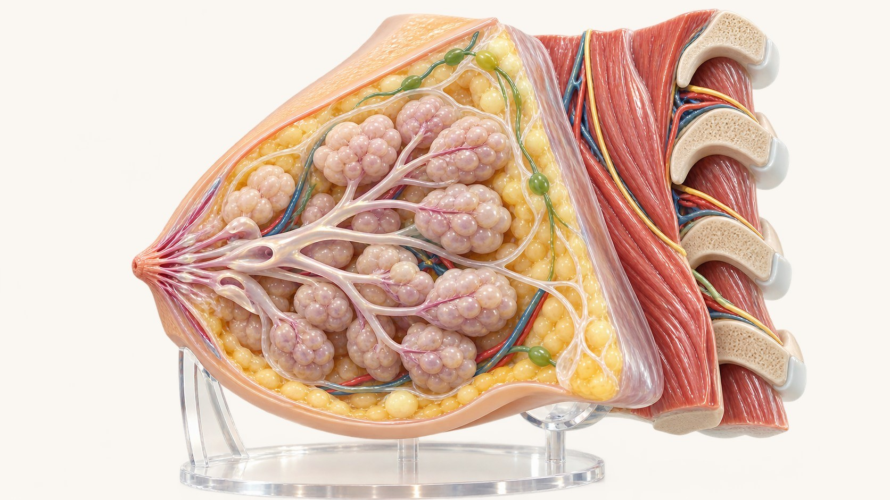

基础与美学
认识乳房的结构｜看懂脂肪、腺体与胸肌的协作
乳房主要由脂肪和乳腺组织构成，长在胸肌之上。本文用大白话讲清它的内部结构，以及大小和形状究竟从何而来。

如果只能记住一句话，那就记这句：乳房主要由两种东西组成，一份是脂肪，一份是乳腺组织，它们安稳地"坐"在胸肌之上。理解了这三者的关系，很多关于"为什么我这样"的疑问，都能自己找到答案。
先看脂肪。它像是乳房里的填充物，决定了乳房的柔软感和一部分体积。脂肪多，乳房就偏饱满、偏软糯；脂肪少，则相对紧实一些。脂肪在乳房里的分布位置，也在悄悄影响形状，是圆润还是稍显饱满，都要看它怎么铺。
再看乳腺组织，这才是乳房真正"干活"的部分，负责泌乳。它由许多腺叶和一条条导管组成，像一棵小小的、分叉的树，从乳头向外延展。它平时安静地待着，青春期在激素作用下开始发育，孕期和哺乳期会明显增生、变大，等哺乳结束，又会慢慢回落。这是它的正常节奏，而不是"坏掉了"。
在最前端，是乳头和乳晕，它们挨着皮肤的开口，是腺体导管通向外的出口。乳头乳晕的大小、颜色深浅、形态，全都因人而异，属于正常差异，没有统一模板。
撑起这一切的，是乳房内部的韧带，以及表面的皮肤和皮下组织。它们像一张网，把脂肪和腺体托在一定的高度上。至于胸肌，它是垫在下面的"地基"。乳房就长在胸大肌上面，不过它和胸肌是两回事。多练胸肌能让整个区域更挺拔、线条更清晰，但它不会凭空"长出"脂肪和腺体，这一点常常被误解。
把结构简单归纳一下。
- 外层：皮肤与皮下组织，包裹并支撑整体；
- 内部：脂肪与乳腺组织，决定体积与功能；
- 前端：乳头与乳晕，腺体导管的出口；
- 地基：胸大肌，垫在乳房下方，支撑整体姿态。
理解了结构，就可以回答两个最常见的疑问。大小如何决定？说到底，乳房的大小主要由脂肪和乳腺组织的量共同决定，而这两者的配比，人人不同。形状为何因人而异？形状更多由脂肪分布、腺体多少、韧带张力、皮肤弹性、年龄、姿势等因素共同塑造。它就像一张指纹，是每个人自带的、独一无二的组合。
所以，乳房的结构本身没有"标准样"，不同是常态。它是一整套精巧协作的系统，值得你认真对待，也值得你放下那些关于"应该长怎样"的执念。
本文用于公众健康教育，不构成医疗建议，不替代面诊。医美决策请与具备资质的医师面诊后作出。